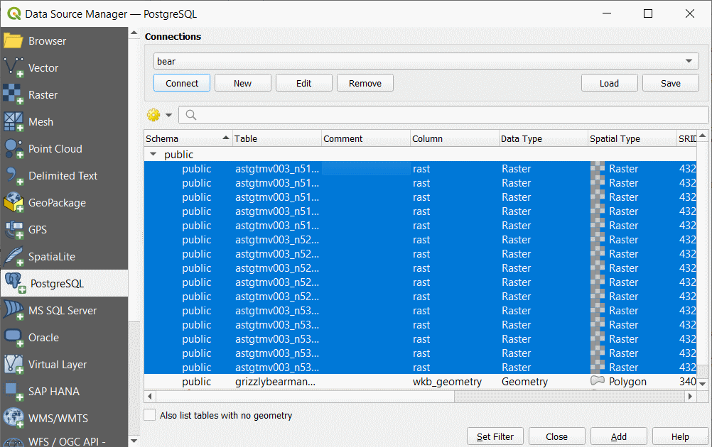
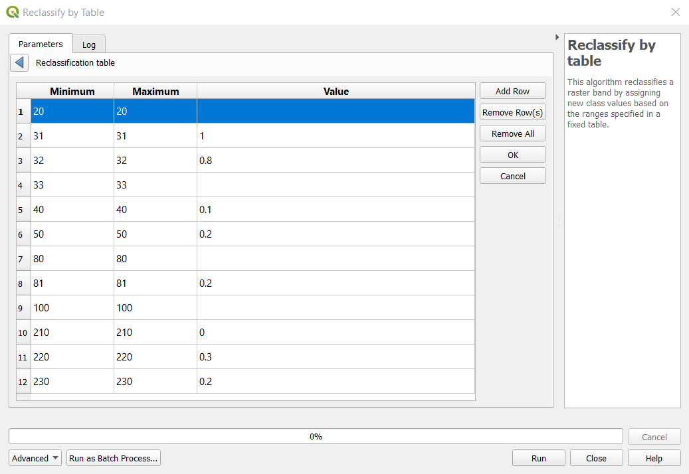
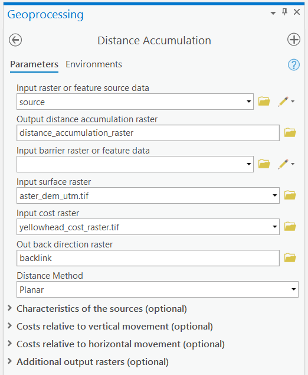

Lab 5 Raster and Least Cost Path Analysis
Written by Paul Pickell
Lab Overview
In this lab, you will explore many of the different raster operations using the Geospatial Data Abstraction Library (GDAL). We will practice using these utilities directly from the command line and in QGIS. You will create a variety of different rasters from different sources and practice deriving new rasters through calculations. These efforts will culminate in a least cost path analysis in ArcGIS Pro. We will examine a critical conservation problem in western Alberta, Canada: Grizzly Bear (Ursus arctos horribilis) habitat and movement. Grizzly Bears are among the largest land predators in North America and have had much of their historical range reduced by human activity. The largest and most well-studied population now resides in the Rocky Mountain foothills of western Alberta.
Learning Objectives
- Describe the raster data model
- Convert between image coordinates and geographic coordinates
- Convert vector data to raster
- Distinguish data types in rasters and identify appropriate encoding of sampled values for different phenomena
- Mosaic rasters together
- Evaluate expressions on rasters using arithmetic and relational operators
- Combine rasters and calculate weighted overlays
- Calculate a least cost path of a landscape indicator species
Deliverables
Answers to the questions posed throughout the lab (20 points)
Create a map of your least cost path that supports your interpretations in Q8 (10 points)
Data
All data for this lab are accessible via the UBC PostgreSQL server. Instructions for connecting to the server are given in prior labs.
Task 1: Define a raster area of interest
Our first task is to define an Area of Interest (AOI) that will represent the extent of all of our raster processing.
Step 1: Open QGIS and create a new project named “GrizzlyBear”.
Step 2: Connect to the bear database on the UBC PostgreSQL server and load the “grizzlybearmanagementareas” layer into your map. These polygons represent the Grizzly Bear population units or Bear Management Areas (BMA) in the Rocky Mountain foothills of Alberta (Alberta Open Government License). For this lab, we will be focusing on the Yellowhead BMA for our AOI.
Step 3: Write an SQL query to select the Yellowhead BMA and then export it to your local QGIS project folder as a shapefile named “yellowhead_bma.shp”, and change the “CRS” to NAD83 / UTM zone 11N (EPSG:26911).
We are going to rasterize this layer and do the basic raster processing outside of QGIS/ArcGIS Pro for a couple of reasons. First, setting the options and raster processing environments in QGIS/ArcGIS Pro is overly complicated and prone to error and unexpected behaviour. Second, you will learn how to use some valuable raster processing utilities of GDAL that can be easily batched and run in chain sequence (i.e., you can batch process large research datasets from a command line).
Step 4: Open the OSGeo4W shell and navigate to your QGIS project folder using the change directory cd command. To do this, first copy the path of your project folder, usually something like C:\Users\paul\Documents\QGIS\GrizzlyBear. Then in the console type cd C:\Users\paul\Documents\QGIS\GrizzlyBear to change to that directory.
The first GDAL utility we are going to use is gdal_rasterize (link to documentation). This utility takes a vector input datasource and converts it to a raster in the output. The simplest usage is gdal_rasterize <src_datasource> <dst_filename>. All of the flags preceded by - are indicated as optional by the square brackets []. If you do not use any of the flags when you run the utility, then the utility will use the default values/settings for those flags that are indicated in the documentation. The AOI raster we are going to create will specify a few conditions of all the other raster processing we will do:
- raster extent (number of rows/columns and geographic coordinates)
- pixel/cell resolution
- spatial reference system
Step 5: In the OSGeo4W shell, enter the following command gdal_rasterize -burn 1 -tr 20 20 -ot Byte -a_nodata -tap yellowhead_bma_utm.shp yellowhead_bma_utm.tif.
-burnflag indicates we want to assign a value of1to the output raster where the features intersect the new raster grid.-trflag indicates we want the output cell resolution to be 20 m (we know its meters because those are the units of the coordinate system) and this is specified twice20 20, once for the x-axis and again for the y-axis.-otflag indicates that we want the output data type of the raster to be"Byte", which translates to a storage cost of 8 bits per pixel (bits per pixel × rows × columns = size of raster on disk).-a_nodataflag indicates that we want to specifically set the nodata value asnodata(default is zero). This will come in handy later because nodata limits the number of cell calculations we need to perform while zero is a valid processing value.-tapflag (target aligned pixels) indicates that we want the new raster extent to be calculated using floor and ceiling functions:
ymax (top) = y_resolution × ceiling(ymax / y_resolution) = 20 × ceiling(5,936,280.447609 / 20) = 20 × 296,815 = 5,936,300
ymin (bottom) = y_resolution × floor(ymin / y_resolution) = 20 × floor(5,753,454.574941 / 20) = 20 × 287,672 = 5,753,440
xmin (left) = x_resolution × floor(xmin / x_resolution) = 20 × floor(401,496.997149 / 20) = 20 × 20,074 = 401,480
xmax (right) = x_resolution × ceiling(xmax / x_resolution) = 20 × ceiling(661,663.194125 / 20) = 20 × 33,084 = 661,680The above calculations are probably not immediately intuitive, but the idea is that we want to create a raster grid that is aligned to the ceiling and floor of our x- and y-resolution. The overall size of the raster is the same whether we do this alignment or not (same number of rows and columns), the only difference is that we are shifting the grid so that the extent coordinates are whole numbers (integers), which makes it easier for us to compute new grids. Bring “yellowhead_bma_utm.tif” into QGIS to inspect it. Check that the values, extent, cell size, and coordinate system are correct. You can also run the gdalinfo utility to check the metadata from the command line like gdalinfo yellowhead_bma_utm.tif.
Task 2: Seamless mosaicking
A common task in raster analysis is mosaicking multiple rasters together to perform analysis on a single file over a larger extent. We will practice doing this with some ASTER Digital Elevation Models (DEM) that are distributed as non-overlapping tiles in WGS 1984 (EPSG:4326). The source for these data can be found at NASA’s Earth Science Data Systems portal, but we will be retrieving these data from the UBC PostgreSQL server instead.
Step 1: Open your QGIS project and from the “Data Source Manager” connect to the bear database of the UBC PostgreSQL server. You should see a listing of 14 rasters there, which have names prefixed with “astgtmv003”. Select all 14 and then click “Add”. It is very important that you add the rasters using this method rather than from the “Browser” pane, otherwise you might have unexpected errors.


Step 2: Open the “Layer Properties” for “astgtmv003_n51w115” and inspect the extent values and the pixel size.
Q1. What units are the extent and pixel size in? (1 point)
If you are wondering why the y pixel size is negative, it is to facilitate the conversion between image coordinates and geographic/projected coordinates. Image coordinates are the unique combination of rows i and columns j representing each pixel in the image. By convention, the origin (0,0) for image coordinates is the upper left corner of the image. Image coordinates are always positive and increase as you move down the image to the lower right corner at (n,m), where n is the number of columns in the image (think x-axis) and m is the number of rows in the image (think y-axis). Most geographic and projected coordinate systems decrease along the y-axis (as you move south), which is the inverse of image coordinates that are increasing. Thus, the y pixel size is usually stored as a negative number in order to convert image coordinates into geographic/projected coordinates.
For example, to convert pixel (i,j) from image coordinates to geographic coordinates where the image origin (0,0) corresponds to geographic coordinates (-115.0001388888889977,52.0001388888888982) as is the case for “astgtmv003_n51w115” and the x pixel size is 0.000277778 and the y pixel size is -0.000277778:
Longitude(i) = -115.0001388888889977 + i × 0.000277778
Latitude(j) = 52.0001388888888982 + j × -0.000277778Q2. Given the equations above, what is the exact latitude and longtiude of the pixel with image coordinates (1907,1918)? Show your work for full credit. (2 points)
Step 3: Copy the coordinates from Q2 and paste them into the “Coordinate” field at the bottom of your QGIS screen (see image below) in the format latitude, longitude and press “Enter”. Change the scale to 1:500 and press “Enter”. You should now be able to distinguish individual pixels. Click the coordinate reference system at the bottom right of the screen and change it from the default value of EPSG:4326 (WGS 1984) to EPSG:26911 (NAD 1983 UTM Zone 11N).
Q3. Why do the pixels now appear to be elongated along the y-axis? (2 points)
Step 4: Save your PostgreSQL credential to your QGIS environment variables by opening the Python console from your toolbar in QGIS, click the small “Show editor” button, and then paste the following into the editor and click the “Run” button:
import os
os.environ['PGUSER'] = 'student'
os.environ['PGPASSWORD'] = 'studentpasswordhere'

This step will automatically authenticate you each time you need to transact with the PostgreSQL server through the GDAL utilities. Your credential is only saved for the duration of your QGIS session, so once you close QGIS and re-open your project, you will need to come back to this step to save your environment variables. Close the python console and editor when you are done.
Step 5: From the QGIS processing toolbox, search for the “Merge” tool, filed under “GDAL Raster Miscellaneous”. This tool is the equivalent of the gdal_merge command-line utility tool, and it takes a set of rasters as input and creates a mosaic of those data. Click the ellipse “…” next to the “Input Layers” field and then click “Select All” to toggle on all the ASTER DEMs currently in your project. Expand the menu for “Output data type” and select “Int16”. Name the output “aster_dem_wgs84.tif”. Click “Run”. Notice when you run these GDAL tools, the log shows you the exact GDAL command that you can run in the command line, like we did in Task 1. Inspect the output in QGIS. Notice that we did not download any of the raster data to our local machine until this very last step.

The mosaic still needs to be reprojected and clipped to the same extent as our AOI, which is what we will do in the next step using the gdalwarp utility. The QGIS tool, “Warp”, does not expose all the options that we need, so we will do this next step in the OSGeo4W shell.
Step 6: Open the OSGeo4W shell and navigate to your project folder where you saved “aster_dem_wgs84.tif”. Type the following command into the console and then hit “Enter”: gdalwarp -s_srs EPSG:4326 -t_srs EPSG:26911 -te 401480 5753440 661680 5936300 -tr 20 20 -r cubic aster_dem_wgs84.tif aster_dem_utm.tif.
-s_srsflag defines the input spatial reference system (coordinate system), which is WGS 1984 orEPSG:4326.-t_srsflag defines our target SRS, which is NAD 1983 UTM Zone 11N orEPSG:26911.-teflag defines our target extentxmin ymin xmax ymax, which is the calculation we did in Task 1401480 5753440 661680 5936300.-trflag defines the target resolution, again specified twice for both axes10 10.-rflag defines the re-sampling method. This is an important flag forgdalwarpbecause any time that you re-project a raster, you are resampling that raster. The term “resampling” comes from the fact that a raster is “sampled” to begin with. Each cell in a raster is a sample of some random variable over the extent of the raster, and the value of that sample is correct for the center of the cell. When we re-project a raster, the locations of the cells change, therefore we need to recalculate the samples or “resample” the raster. Our selected method of resampling in this case iscubic, which is a smoothing algorithm and well-suited for continuous data like elevation.aster_dem_wgs84.tifis the input raster andaster_dem_utm.tifis the output (resampled) raster. Inspect the output in QGIS.
Note that we did not use the -ot output data type flag, so gdalwarp used the Int16 data type of our input raster. If you set -ot Float32, then you would see that the cubic resampling algorithm actually yields decimals instead of the integers that you see in the current output, but for our purposes that sub-meter level of precision is not needed.
Step 7: Search for the “Raster Calculator” tool. Double-click the “aster_d em_utm.tif” mosaic to add it to the expression, then click the multiply button “*“, then double-click the”yellowhead_bma_utm.tif” raster to add it to the expression. Scroll down farther and click the ellipse “…” next to the “Output” field to save the output as “aster_dem_utm_aoi.tif”. Click “Run” and then inspect the output in your map.

Task 3: Calculating movement costs
In this task, we will calculate a few derivative rasters that are going to represent various costs for Grizzly Bears to move across the landscape. At the end of the task, we will produce a cost raster that will be one of the inputs to our least cost path model in the following task.
Step 1: Open your QGIS project and search for the “Slope” tool. Add “aster_dem_utm_aoi.tif” as the “Elevation layer” and save the output to “aster_slope_utm_aoi.tif”. Inspect the output in your map.
Step 2: We are going to adjust the slope values to a range of 0 and 1. This is easily done by dividing all values by 90, which is the theoretical maximum slope in degrees. Open the “Raster Calculator” tool and type the expression "aster_slope_utm_aoi@1" / 90. Change the “Reference layer” to “yellowhead_bma_utm.tif”, click “OK”, and name the output “aster_slope_utm_aoi_cost.tif” then click “Run”. Inspect the output in your map, you should now have values between 0 and 1.
Step 3: Open the “Data source manager”, connect to the bear database on the UBC PostgreSQL server, and add the “ca_forest_vlce2_2019” raster to your map. This layer is a clipping of a national land cover dataset for Canada for the year 2019. The values of the raster refer to specific land covers. Open the properties for the layer. As you can see, it has a different coordinate system, resolution, and extent than our AOI. Export this raster as a GeoTiff to your local project folder and keep the output name the same.
Step 4: Open the OSGeo4W shell and navigate to your project folder. Run the gdalwarp utility again, parameterize it the same as before in Task 2, but change the -s_srs flag to EPSG:3978, the -r flag to near, the input file to ca_forest_vlce2_2019.tif, and the output file to land_cover_utm.tif. Inspect the output in QGIS.
Q4. Why did we choose ‘near’ as the resampling method? (1 point)
Step 5: Use the “Raster Calculator” tool to multiply “yellowhead_bma_utm.tif” by “land_cover_utm.tif” and write the output to “land_cover_utm_aoi.tif”.
We want to use the land cover layer as an input to our cost surface, but the values of the land cover raster are codes, which are nominal data. These values cannot directly be compared as-is. For example, the code for water is 20 and the code for herbs is 100. These numbers do not imply that herbs is 5 times more costly than water, they are simply numerical placeholders for the concept of land cover. We need to define and then assign proper values for each land cover that represents the cost or resistance for Grizzly Bears to traverse a cell of that land cover. We can do this by reclassifying the land cover raster. Below is a table indicating the land cover class codes and some proposed cost values scaled between 0 (no cost) and 1 (highest cost):
| Code | Land Cover | Proposed Cost |
|---|---|---|
| 20 | Water | ? |
| 31 | Snow/Ice | 1 |
| 32 | Rock/Rubble | 0.8 |
| 33 | Exposed Barren Land | ? |
| 40 | Bryoids | 0.1 |
| 50 | Shrubs | 0.2 |
| 80 | Wetland | ? |
| 81 | Treed Wetland | 0.2 |
| 100 | Herbs | ? |
| 210 | Coniferous | 0 |
| 220 | Broadleaf | 0.3 |
| 230 | Mixedwood | 0.2 |
Step 6: Open the “Reclassify by Table” tool. Select “land_cover_utm_aoi.tif” as the “Raster layer” and then click the ellipse “…” next to “Reclassification table”. Populate the table with all the land cover codes. You will need to use some judgement and determine what would be reasonable values for the four missing codes in the table above. There is no right or wrong answer for these, but you will need to justify your choices. When you have filled in the table (see image below), change “Range boundaries” to “min <= value <= max”, click “OK”, and then name the output “land_cover_utm_aoi_cost.tif”. Inspect the output in your map, you should have values ranging from 0 to 1.

Q5. What was your rationale for cost choices for classes 20, 33, 80, and 100? (4 points)
The last layer we are going to add is distance to roads as a simple proxy for human-related mortality.
Step 7: Open “yellowhead_roads” in QGIS from the UBC PostgreSQL database, if you have not already. Open the “Reproject Layer” tool and change the projection for “yellowhead_roads” to EPSG:26911 and name the output “yellowhead_roads_utm.shp”.
Step 8: In the OSGeo4W shell, enter the following command gdal_rasterize -burn 1 -tr 20 20 -ot Byte -a_nodata nodata -te 401480 5753440 661680 5936300 yellowhead_roads_utm.shp yellowhead_roads_utm.tif. You should recognize all these flags by now. Inspect the output in QGIS.
Step 9: Search for the “Proximity (Raster Distance)” tool. The input layer will be “yellowhead_roads_utm.tif”. Name the output as “yellowhead_roads_distance_utm.tif”. Ensure that your QGIS map project CRS is set to EPSG:26911 in the bottom right hand corner, then click “Run” and inspect the output in the map.
Step 10: Open the “Raster Calculator” tool and add the expression (1 / ("yellowhead_roads_distance_utm@1" + 0.5)) / 2. Let us break this one down:
1 / "yellowhead_roads_distance_utm@1"would give us the inverse distances, however, cells that are roads have a distance of zero, and \(1÷0=undefined=nodata\). Therefore, we need to add a fraction to the denominator.1 / ("yellowhead_roads_distance_utm@1" + 0.5)avoids nodata values in the situation above, but now roads have a value of \(1÷0.5=2\). We ultimately want these values to be between 0 and 1, with 1 representing roads.(1 / ("yellowhead_roads_distance_utm@1" + 0.5)) / 2dividing everything by 2 causes the 0.5 fraction to be removed from all cells, and road cells to be assigned a value of \(2÷2=1\).
This way, the cost of traversing a roadway is 1 and decreases as you move away from the road. Change the “Reference layer” to “yellowhead_bma_utm.tif” and save the output as “yellowhead_roads_distance_utm_cost.tif”. Inspect the output in your map and zoom in close to a road.

Now that we have three different cost layers, slope, land cover, and distance to roads, we simply need to decide how to combine them into a single cost raster. This is made easy by the fact that all layers are scaled between 0 and 1. The simplest approach would be to add them all together, but this assumes equal-weighting given to each cost factor. It is also common to weight layers differently and this can be achieved by multiplying a set of weights to the layers that add up to 1. For example, to weight slope 10%, land cover 30%, and road distance 60%, we would use the formula \(totalcost=slope×0.1+landcover×0.3+road×0.6\). Note that \(totalcost=slope×0.33+landcover×0.33+road×0.33\) is functionally the same as \(totalcost=slope+landcover+road\). Differences in the percentage weightings are not absolute difference, but relative. For example, 30% weight to land cover implies that land cover is weighted 3 times more than slope at 10%: \(0.3÷0.1=3=300\%\).
Step 11: Pick weightings for your three layers (the weights must sum to 1), then open the “Raster Calculator” tool and apply the formula above. Set the “Reference layer” to “yellowhead_bma_utm.tif” and save the output as “yellowhead_cost_raster.tif”.
Q7. What additional or alternative layers could you have used for costs in this analysis? Give at least two examples and explain why they are pertinent. (4 points)
In these last steps, we are going to create the point layers that will be used to trace the least cost path in the following task.
Step 12: Add the “grizzly_bear_core_access_management_area” to your map from the UBC PostgreSQL server. These represent the core habitat of Grizzly Bear across all regions. Select the Yellowhead unit and then search for the “Centroids” tool under “Vector Geometry”, ensure “Input Layer” is set to “grizzly_bear_core_access_management_area”, “Selected features only” is toggled on, and save the output as “yellowhead_bma_centroid.shp”. Reproject this layer to EPSG:26911 and name the output “source.shp”.
Step 13: Now let us randomly choose a point in the secondary habitat area. Add the “grizzly_bear_secondary_access_management_area” and select the Yellowhead unit. Search for the “Random points inside polygons” tool, ensure “Input layer is set to”grizzly_bear_secondary_access_management_area”, “Selected features only” is toggled on, and save the output as “yellowhead_bma_target.shp”. Reproject this layer to EPSG:26911 and name the output “target.shp”. You can repeat this as many times as you want until you get a satisfactory location.
Task 4: Least cost path analysis in ArcGIS Pro
For this last task, we are going to perform the least cost path analysis in ArcGIS Pro. QGIS has a least cost path plugin, but it is not as robust as the ArcGIS Pro tools.
Step 1: Open a new ArcGIS Pro project and add the following layers to your map:
- Total cost raster: “yellowhead_cost_raster.tif”
- Aster DEM: “aster_dem_utm.tif”
- Slope raster: “aster_slope_utm_aoi.tif”
- Land cover raster: “land_cover_utm_aoi.tif”
- Road polylines: “yellowhead_roads_utm.shp”
- Yellowhead source: “source.shp”
- Yellowhead target: “target.shp”
Step 2: Open the “Distance Accumulation” tool and parameterize it according to the image below. You can save the two output rasters (“distance_accumulation_raster” and “backlink”) in your project geodatabase or in your QGIS project folder as geotiffs, just be mindful that you cannot save a geotiff inside your geodatabase. This tool will take your source point and calculate the accumulative cost to travel to all other cells using a combination of the cost raster and the real geographic distance, both horizontal and vertical, which is why we supply the ASTER DEM.

The “distance_accumulation_raster” shows us the accumulated cost-distance to reach any given cell in the AOI from the source point.

The “backlink” raster shows us the direction of the least costly path back to the source for any given cell. In other words, this raster is encoding the lowest directional movement cost for the 8-neighbours of each cell. Since the costs are accumulative relative to the source cell, this means that we can trace a path from any given pixel in the “backlink” raster back to the source cell. The image below shows a close-up for the source cell and illustrates how these values are encoded.

Step 3: Now we can trace the least cost path between our source and target locations. Open the “Optimal Path as Line” tool and parameterize like the image below then click “Run”.

Step 4: Inspect the output. You should be able to trace the line along the “backlink” raster. Toggle on the roads. How many roads did you path cross? Toggle on the land cover. Were there any land covers that were avoided? Toggle on the slope. Did the path avoid any steep slopes or otherwise maneuver around the terrain?
Summary
Raster analysis is comprised of manipulating base data, deriving new rasters, and weighting and combining rasters together in order to answer a spatial question. In this lab, you learned how to effectively set up a raster analysis through careful planning and choice of factors like raster extent, coordinate system, cell size, alignment, data type, and resampling algorithms. Rasters can lead to powerful spatial analyses like least cost path analysis due to the explicit encoding of information in the spatial neighborhood.
Return to the Deliverables section to check off everything you need to submit for credit in the course management system.